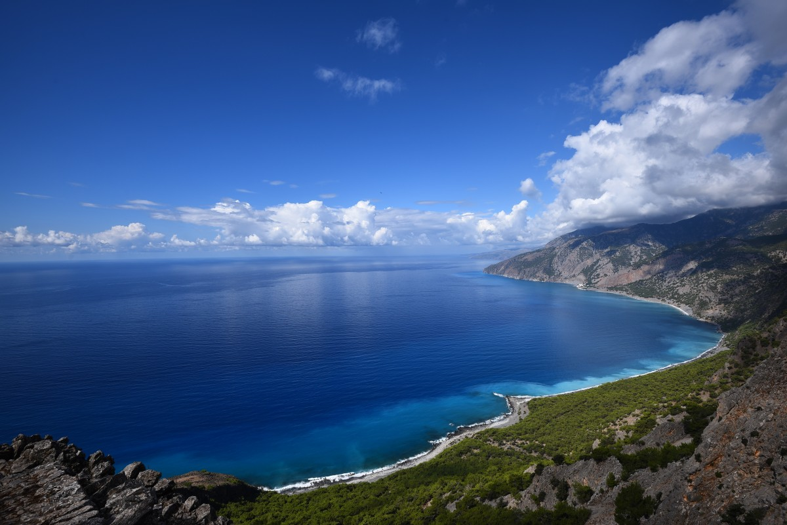

Título personaSubtitulo

Definición de Costa. Se llama costa a la orilla del mar y la tierra que se encuentra próxima a esta se trata de la parte de un continente, o en su defecto de una isla, que limita con el marSubtiulo de costaTítulo del footerSubtiulo de footerTítulo personaSubtiuloDefinición de Costa. Se llama costa a la orilla del mar y la tierra que se encuentra próxima a esta se trata de la parte de un continente, o en su defecto de una isla, que limita con el marSubtiulo de costaTítulo del footerSubtiulo de footerTítulo personaSubtiuloDefinición de Costa. Se llama costa a la orilla del mar y la tierra que se encuentra próxima a esta se trata de la parte de un continente, o en su defecto de una isla, que limita con el marSubtiulo de costaTítulo del footerSubtiulo de footer